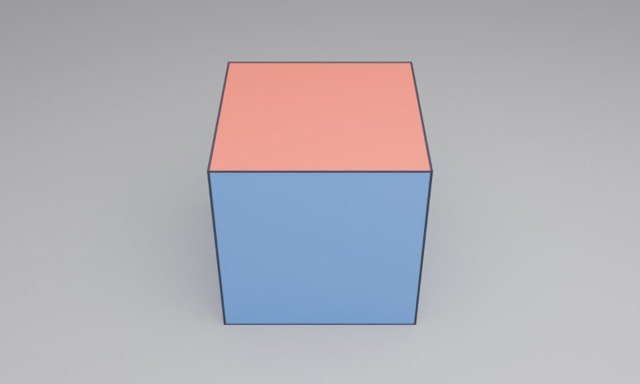
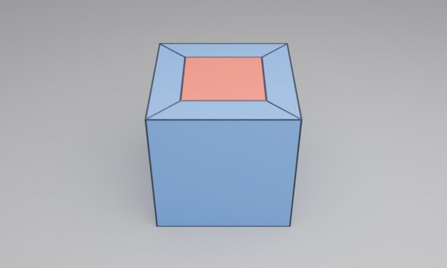
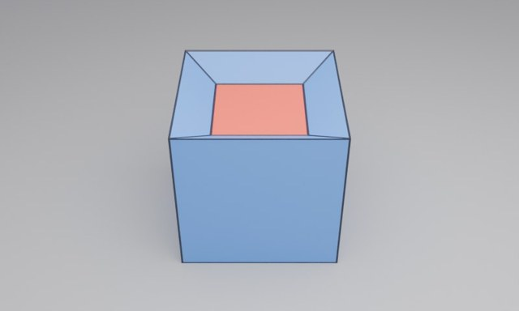

Bonus lesson
Inset Faces
Inset Faces takes the selected faces and creates an inset of them, with adjustable thickness and depth. Think of it as an edge loop that follows the edges of your selection. In Edit Mode you find it in the Face menu, in the toolbar, or by pressing I.



How it works
The tool is modal. When you activate it, you adjust the thickness with your mouse position. You can also change the depth during the operation by holding Ctrl.
Options
After the operation, the Adjust Last Operation panel offers these options:
- Boundary: whether open edges are inset or not.
- Offset Even: scales the offset to give a more even thickness.
- Offset Relative: scales the offset by the lengths of the surrounding geometry.
- Edge Rail: new vertices slide along the original edges instead of the normals.
- Thickness: the size of the offset.
- Depth: raises or lowers the new faces.
- Outset: creates the geometry around the selection instead of inside it.
- Select Outer: chooses which side of the inset stays selected.
- Individual: insets each selected face on its own instead of the whole region.
- Interpolate: interpolates mesh data such as UVs and color attributes.
Read the manual page on Inset Faces.
Try it
This exercise is our own suggestion and has not been run step by step in the GUI. Add a cube, enter Edit Mode and switch to Face select mode. Click the top face, press I and move the mouse to set the thickness, then click to confirm. Press I again, hold Ctrl while moving the mouse, and watch the depth change. Use Ctrl+Z to undo and compare.